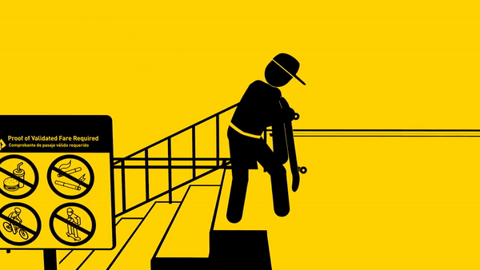

-
StradaQua ci occuperemo di tutte le definizioni stradali, in quanto è fondamentale conoscere bene la terminologia adottata dal nuovo Codice della strada per non incorrere in errori banali. Pertanto il primo argomento che affronteremo è la definizione di strada, partendo proprio da quella fornita dal nuovo Codice della Strada.
-
SicurezzaQua ci occuperemo della sicurezza sulla strada, potrebbe essere di vari tipi, distanza di sicurezza, limiti di velocità, surpasso ecc.
-
SegnaliQua ci occuperemo per riconoscimento dei segnali che incontreremo spesso sulla strada, innanzitutto occorre specificare che è possibile riconoscere il tipo di segnale che avete di fronte (pericolo, divieto, obbligo ecc.) semplicemente osservandone la forma e il colore.